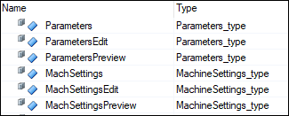

mapp Recipe Framework - Recipe System Design
- There are two recipe categories in this recipe system: "Product" and "Machine".
- Each category gets saved to its own recipe file.
- One structure variable is registered to each category.
- Parameters_type holds the product data.
- MachineSettings_type holds the machine data.
- Three variables of each datatype are used in order to accomplish the preview functionality and the ability to edit a recipe without formally loading it (see below). For example, let's focus on the parameters structure:
- The variable Parameters is the actual variable structure that holds the active recipe, which should be used around the application. This variable is not directly registered to the recipe.
- The variable ParametersPreview is the only variable that is registered to the Product category of the recipe. This allows you to load and preview recipes without actually activating them in the application. If a recipe should be loaded to the application, then the Parameters variable structure gets set equal to the ParametersPreview structure by the framework.
- The variable ParametersEdit is used as an intermediary structure to be able to edit the recipe without loading it to the application. It also acts as a buffer between the registered variable so that you can easily discard changes while editing if you need to.
